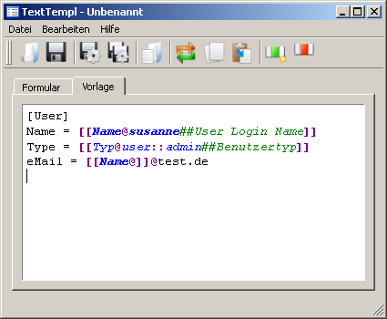
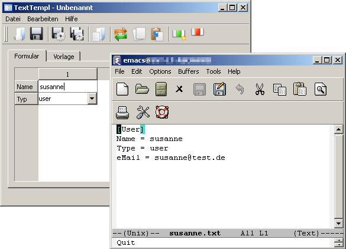

[[Feldname@]]Ein Feld kann mehrfach in der Vorlage vorkommen.
Zusätzlich kann nach dem "@" eine Vorbelegung angegeben werden.
Die vorbelegung muss, bei Feldern mit gleichem Namen, nur
im ersten Feld angegeben werden.
[[Feldname@Standardwert]]Die Vorbelegung kann als Optionsliste aufgeführt werden. Hierzu werden die einzelnen Optionen mit "::" getrennt.
[[Feldname@Ja::Nein]]Endet die Optionsliste mit "::" so wird das Formularfeld editierbar.
[[Feldname@Wert1::Wert2::]]
Nach der Vorbelegung ist ein Kommentar möglich der
durch "##" abgetrennt wird und im Formular als Tooltip erscheint.
[[Feldname@Wert1::Wert2::##Anlagentyp]]
Existiert ein Feld mit dem Namen "Name" so wird dies als Dateiname
verwendet.
Soll kein "Name" Feld imn der Vorlage vorkommen, der Dateiname aber
vorgegeben werden, so kann hierfür ein Dummyfeld in die erste Zeile
der Datei eingefügt werden.
[[Name@***]]Diese Feld erscheint dann im Formular, wird aber nicht in das Resultat mit übernommen.
[User] Name = [[Name@susanne##User Login Name]] Type = [[Typ@user::admin##Benutzertyp]] eMail = [[Name@]]@test.de
Das Resultat der Vorlage mit den Standardwerten wäre:
[User] Name = susanne Type = user eMail = susanne@test.de